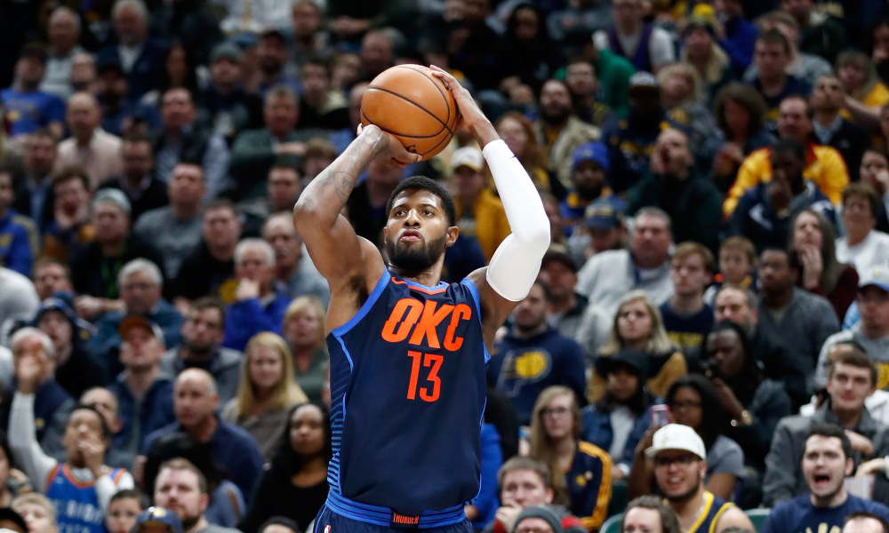
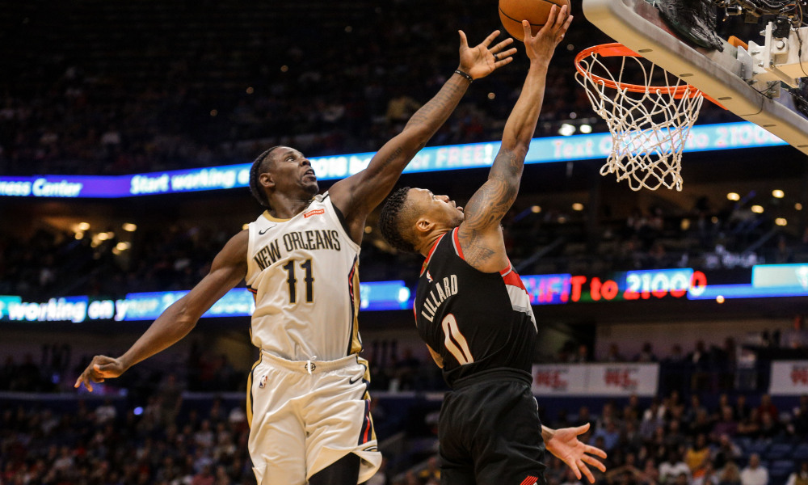
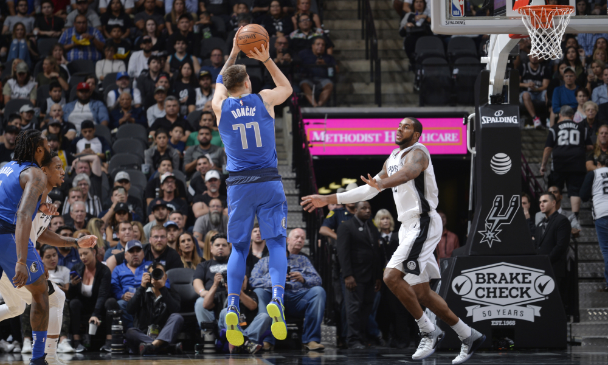

Game 1: Detroit Pistons at Orlando Magic
My Pick:
Detroit Pistons
Why I'm Rolling with them:
This Detroit team should be able to handle business in Orlando, where Aaron Gordon and Nikola Vucevic face off against Blake Griffin and Andre Drummond. Detroit played last night and lost a tough one in Miami, but Drummond had a fantastic game where he put up 25/24, boosting his season averages to 18/16. Those rebounding numbers lead the league, and are made more impressive with the knowledge that over a third of them are offensive rebounds. This will allow the Detroit team to get agressive against this Orlando defense, while controlling the number of possessions they can get. That advantage should be enough for Detroit to win, 110-105.
Game 2: Oklahoma City Thunder at Cleveland Cavaliers
My Pick:
Oklahoma City Thunder
Why I'm Rolling with them:
Russell Westbrook going down with an ankle sprain is a bad sign for this OKC team, luckily it came at a time where their next game was against this subpar Cleveland team. Shroeder is more than enough to run the point against this Cleveland defense, and George and Adams are the two best players on the court. Tristan Thompson has not lived up to his quote earlier this year, and Cleveland is set to miss the playoffs for the first time since Lebron came back. I think this OKC team is a really tough matchup for them, and they'll have a hard time putting up points. Final score, Thunder 107 - Cavs 92.
 Paul George will need to step up in Westbrook's absenceGame 3: New York Knicks at Atlanta Hawks
My Pick:
New York Knicks
Why I'm Rolling with them:
This Hawks team played last night and looked mediocre against a decent Charlotte team. If it wasn't for Jeremy Lin putting up 19 points in 18 minutes, this game would have gone a lot worse. This Knicks team has proven that they can take advantage of weaker teams, and I'm counting on Kanter to have a big game against this weak Atlanta frontcourt, especially if Collins and Prince are out. Hardaway Jr. has still been playing well, and although Ntilinka is in a slump he stil provides a lot on the defensive end, and should be able to slow Trae Young. Knicks win, 110-103.
Game 4: San Antonio Spurs at Miami Heat
My Pick:
San Antonio Spurs
Why I'm Rolling with them:
The Spurs had a tough loss to the Magic on Sunday, LMA looked off compared to his normal self and although DeMar had a good game, he can't carry the load by himself. I have faith that Aldridge will bounce back tonight, so having Gay out shouldn't hurt as badly. In addition, Derrick White will play off the bench tonight, allowing them to have more depth in the guard spots. Dragic will still have a good night, and I'm curious to see how Richardson will fare against DeRozan, both offensively and defensively. But the Spurs take it, 115-110.
Game 5: Chicago Bulls at New Orleans Pelicans
My Pick:
New Orleans Pelicans
Why I'm Rolling with them:
The Pelicans should have no trouble dispatching this Chicago Bulls team on the road, as their interior presence is far superior to the Bull's frontcourt. Not only that, having Jrue Holiday to guard LaVine will slow down the Chicago offense to a crawl, allowing them to dominate this weaker Chicago team. Anthony Davis has been off lately, and is due for a bounceback game as the Pelicans look to snap a six game losing streak against this weak Bulls roster. Pelicans, 120-105.
 Count on Holiday to be a defensive menace on the perimeterGame 6: Denver Nuggets at Memphis Grizzlies
My Pick:
Denver Nuggets
Why I'm Rolling with them:
Jamal Murray just set his career high, and also set off the entirety of the Boston Celtics. Only one of these is relevant for tonight, where Denver looks to continue their winning ways against a Memphis team that has struggled so far this season against teams with good guards. If Murray can build off of last game and put up 20-25 points I love Denver's chances of winning this one by a mile. Even without that, Jokic has demonstrated a ton of value even when his shot isn't falling. I have faith he and Millsap can hold off the Memphis frontcourt enough to really do some damage. Denver, 113-103.
Game 7: Philadelphia 76ers at Indiana Pacers
My Pick:
Indiana Pacers
Why I'm Rolling with them:
As dominant as Joel Embiid has been lately, I'd wager Oladipo has been just as good. His stats may not reflect it, but he has played fantastic in the clutch lately, singlehandedly winning the game against Boston a couple nights ago. The Pacer's bench is a lot stronger than the 76ers, and Oladipo should be able to abuse the Philadelphia guards defensively (Mainly Markelle, not Ben). Covington could be out tonight, and as he was the person I thought would be guarding Oladipo, I'm really excited to see how he can produce. Embiid will get his against Turner, but the rest of the Pacers should be primed to take this one, 118-113.
Game 8: Dallas Mavericks at Utah Jazz
My Pick:
Utah Jazz
Why I'm Rolling with them:
Donovan Mitchell is ruled probable for tonight's game against Dallas, which will be a welcome return for this Utah squad that has struggled offensively their past 3 games without him. The Jazz are also not the defensive powerhouse they were for most of last season, with a shocking number of attempts coming against the "Stifle Tower", Rudy Gobert. The last time these two teams played, Dennis Smith Jr. scored 27 points on 12/19 shooting. This number needs to drop significantly for tonight, especially since the majority of those came from inside the 3 point line, an area where Gobert is supposed to be defending at a DPOY level. That said, this Dallas team doesn't have the offensive tools to be able to compete with Utah for the full 48, as long as Utah doesnt have a giant defensive lapse they'll win this one, 117-112.
 Doncic is a rising star for this Mavericks teamGame 9: Toronto Raptors at Sacramento Kings
My Pick:
Toronto Raptors
Why I'm Rolling with them:
Although Kawhi is only listed as questionable for tonight, even with him out of the lineup I have faith this Raptors squad can beat the Kings pretty easily. Buddy Heild and DeAaron Fox have been the two main producers for this Kings squad, and the Raptors perimeter defense is elite, even without Kawhi. Serge Ibaka has hit 27 of his last 29 shots, a hyperefficient stretch by any means, and looks rejuvenated in his new role. The Raptors have had a balanced offense their past few games, with 4 players scoring 17 in their win over the Jazz. If they keep up this democracy with Kawhi out, they should be able to easily handle the Kings, 120-111.
Game 10: Minnesota Timberwolves at Los Angeles Lakers
My Pick:
Los Angeles Lakers
Why I'm Rolling with them:
Whether or not Jimmy Butler plays will be an important distinction in this game, with Butler being the best option to guard Lebron on this Timberwolves team. Wiggins has the physical tools but not the basketball IQ to be able to adaquately guard Lebron, Gibson is just a little too slow. Minnesota will depend on Towns to have a similarly good game as the last time these two teams met, where he put up 25/16 in the win. McGee has also been playing well, so it will be interesting to see how these two athletic centers compete. That said, I don't think Minnesota will be able to snag this one, as Lebron and the Lakers take it, 120-116.